01
AI Systems
RAG and agentic workflows
Build retrieval pipelines, agentic RAG flows, multi-agent setups, vector search layers, and evaluation-ready AI application logic.


Selected Positioning
Build retrieval pipelines, agentic RAG flows, multi-agent setups, vector search layers, and evaluation-ready AI application logic.
Work across collection, cleaning, feature preparation, model training, validation, and practical experimentation in Python.
Automate checks, integrate CI/CD tests where feasible, monitor systems, and support deployment workflows including Google Vertex AI.
Selected Deployments
A multi-agent RAG framework using LangGraph to dynamically plan, retrieve, and validate queries across multiple documentation layers.
Continuous training and automated MLOps evaluation pipeline deploying fine-tuned transformer models onto Google Vertex AI endpoints.
A streaming ingestion sync computing real-time embeddings from relational DB changes directly into vector indexing stores.
Technology Map
How I Work
Clarify objective, data shape, metrics, constraints, and the expected user workflow.
Connect data, retrieval, model logic, APIs, and automation into one testable flow.
Validate outputs, add checks, monitor behavior, and prepare for iteration in production.
Contact